📊 미국장 장전(프리장) 리포트
31 / 100 — 공포
🌎미국 증시 마감
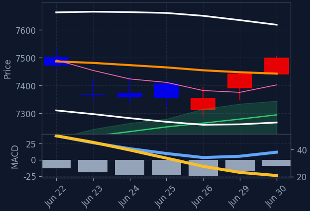
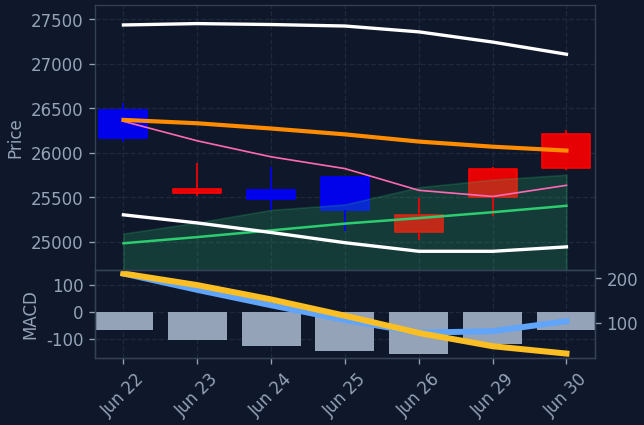
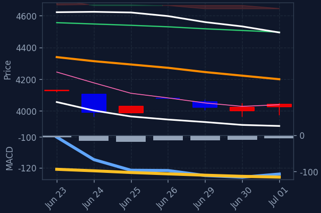

프리장에서 혼조세를 보이며, 기술주 중심의 하락세와 반도체 섹터의 강세가 엇갈리는 모습입니다. 특히 필라델피아 반도체 지수의 큰 폭 상승이 눈에 띄며, 이는 AI 관련 훈풍이 이어지고 있음을 시사합니다. 다만, 전반적인 시장 심리는 연준 의장의 발언과 주요 경제 지표 발표를 앞두고 신중한 분위기입니다.
직전 정규장 마감 후 발표된 경제 지표나 주요 기업 실적 발표는 없었으나, 프리장에서는 필라델피아 반도체 지수가 3.92% 급등하며 반도체 섹터 전반의 강세를 이끌고 있습니다. 반면, 기술/IT 섹터는 1.40% 하락하며 대조적인 흐름을 보이고 있으며, 이는 개별 종목별 차별화 장세가 나타나고 있음을 보여줍니다. 유가 하락과 금 가격 상승은 안전자산 선호 심리를 일부 반영하는 것으로 보입니다.
프리장에서는 필라델피아 반도체 지수의 3.92% 상승이 시장의 가장 큰 특징입니다. 이는 AI 관련 수요 증가 기대감과 더불어 반도체 관련 기업들의 긍정적인 전망이 반영된 결과로 해석됩니다. 반면, 기술/IT 섹터는 1.40% 하락하며 차익 실현 매물이 출회되는 모습입니다. 빅테크 기업 중에서는 메타, 넷플릭스, 마이크로소프트 등 일부 종목이 상승세를 보였으나, 엔비디아, AMD 등 반도체 관련주는 하락하며 섹터 내에서도 종목별 온도차가 뚜렷합니다. 이러한 흐름은 한국 증시에서도 반도체 관련주에 대한 관심이 이어질 수 있음을 시사합니다.
🇺🇸미국 야간 (선물·M7·SOXL · 마감 등락 + 프리장/애프터 등락)
📊 나스닥 선물 -0.68%
📊 S&P500 선물 -0.07%
- 애플 AAPL·나스닥 마감 +2.7% · 프리장 +0.6%
- 엔비디아 NVDA·나스닥 마감 +2.6% · 프리장 -1.8%
- 테슬라 TSLA·나스닥 마감 +2.1% · 프리장 -0.4%
- 마이크로소프트 MSFT·나스닥 마감 +1.2% · 프리장 +1.4%
- 알파벳 GOOGL·나스닥 마감 +1.1% · 프리장 +0.3%
- 메타 META·나스닥 마감 +0.1% · 프리장 +6.4%
- 아마존 AMZN·나스닥 마감 -0.8% · 프리장 +0.2%
- 한국 ETF(EWY) EWY 마감 +2.2% · 프리장 -5.3%
- SOXL(반도체 3X) SOXL 마감 +12.8% · 프리장 -8.8%
🚀프리장 급등 TOP5 (ABCD 필터 통과 종목 중)
-
일라이릴리
LLY·NYSE · 종가 $1,199.43 (전일 -2.48%) (프리장 +0.38%)
· 제약A 시그널 ⓘ수렴대 위로 상승전환 (수렴 3.8%) / 120선 위 (+18.0%) · MACD[GC,0선위,상승]
-
버크셔해서웨이
BRKB·NYSE · 종가 $500.39 (전일 +0.89%) (프리장 +0.08%)
· Multi-Sector HoldingsA/C/D 시그널 ⓘ수렴대 위로 상승전환 (수렴 1.4%) / 120선 위 (+3.1%) · MACD[0선위,상승]
-
비자
V·NYSE · 종가 $343.09 (전일 +0.42%) (프리장 +0.07%)
· 결제A/C/D 시그널 ⓘ추세 반전 (일목구름 위, 5>20, MACD+, 20>60)
-
레딧
RDDT·NYSE · 종가 $173.58 (전일 -0.46%) (프리장 +0.02%)
· 인터넷A 시그널 ⓘ수렴대 위로 상승전환 (수렴 2.5%) / 120선 위 (+6.4%) · MACD[0선위,상승]
-
로켓 컴퍼니스
RKT·NYSE · 종가 $15.75 (전일 +1.61%) (프리장 -0.25%)
· 핀테크D 시그널 ⓘ추세 반전 (일목구름 위, 5>20, MACD+, 20<60(초입))
🔥강세 섹터 (상승률 상위)
- 태양광/신재생 +0.42%
- 헬스케어/바이오 +0.21%
- 2차전지/리튬 +0.13%
- 경기소비재 +0.02%
🔻약세 섹터 (하락률 상위)
- 반도체 -3.31%
- 기술/IT -1.40%
- 에너지 -0.41%
- 방산/우주항공 -0.09%
🧬관심 테마 대장 (양자·우주·AI 등)
💰미국장 거래대금 순위 TOP10 (S&P500)
-
1.
AMD
AMD·나스닥 · 종가 $580.91 (전일 +7.68%)
거래대금 31조 1,390억시총 1,475조 3,426억
-
2.
테슬라
TSLA·나스닥 · 종가 $420.60 (전일 +2.13%)
거래대금 28조 2,139억시총 2,460조 3,640억
-
3.
인텔
INTC·나스닥 · 종가 $139.63 (전일 +6.01%)
거래대금 25조 3,660억시총 1,093조 441억
-
4.
어플라이드머티리얼즈
AMAT·나스닥 · 종가 $723.00 (전일 +4.08%)
거래대금 18조 4,281억시총 894조 731억
-
5.
램리서치
LRCX·나스닥 · 종가 $433.33 (전일 +5.46%)
거래대금 11조 3,838억시총 844조 194억
-
6.
KLA
KLAC·나스닥 · 종가 $301.71 (전일 +8.38%)
거래대금 9조 3,466억시총 613조 8,479억
-
7.
웨스턴디지털
WDC·나스닥 · 종가 $638.72 (전일 -2.02%)
거래대금 9조 1,989억시총 342조 8,986억
-
8.
일라이릴리
LLY·NYSE · 종가 $1,199.43 (전일 -2.48%)
거래대금 6조 9,456억시총 1,665조 9,052억
-
9.
시게이트
STX·나스닥 · 종가 $965.00 (전일 -0.36%)
거래대금 6조 2,852억시총 340조 607억
-
10.
GE 버노바
GEV·NYSE · 종가 $1,174.86 (전일 +6.56%)
거래대금 5조 6,580억시총 491조 7,253억
🏆미국 추천 Top 3
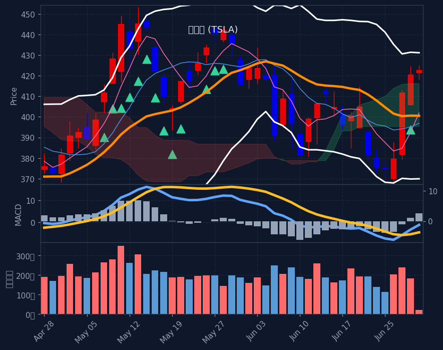
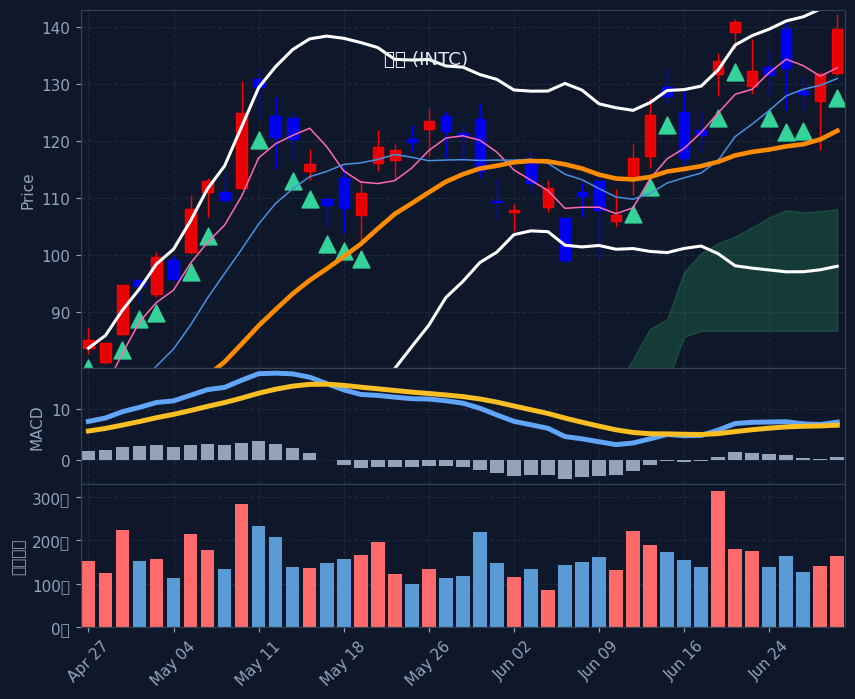
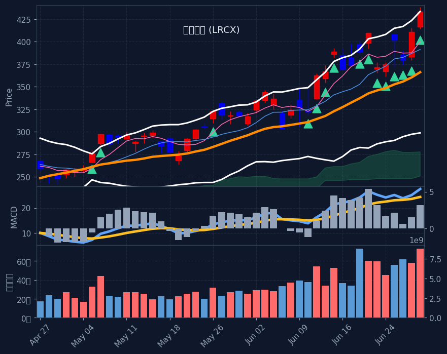
🇺🇸미국 종목 스크리닝 (전략별 칸 · A/B/C/D)
📊 A 수렴 후 상승 (3)
-
테슬라
TSLA·나스닥 · 종가 $420.60 (전일 +2.13%) (프리장 -0.39%)
A 시그널 ⓘ 20일선 +5.0%시총 2,460조 3,640억 · 거래대금 28조 2,139억테마: 자동차🔻 한국인 순매도 최근5일 4,168억(자금유출)수렴대 위로 상승전환 (수렴 2.0%) / 120선 위 (+4.1%) · MACD[GC,상승]
-
일라이릴리
LLY·NYSE · 종가 $1,199.43 (전일 -2.48%) (프리장 +0.38%)
A 시그널 ⓘ 20일선 +5.8%시총 1,665조 9,052억 · 거래대금 6조 9,456억테마: 제약수렴대 위로 상승전환 (수렴 3.8%) / 120선 위 (+18.0%) · MACD[GC,0선위,상승]
-
버크셔해서웨이
BRKB·NYSE · 종가 $500.39 (전일 +0.89%) (프리장 +0.08%)
A/C/D 시그널 ⓘ 20일선 +2.4%시총 1,680조 9,925억 · 거래대금 4조 6,024억테마: Multi-Sector Holdings수렴대 위로 상승전환 (수렴 1.4%) / 120선 위 (+3.1%) · MACD[0선위,상승]
🔄 B 20일선 눌림목 (3)
-
웨스턴디지털
WDC·나스닥 · 종가 $638.72 (전일 -2.02%) (프리장 -5.38%)
B 시그널 ⓘ 20일선 +4.2%시총 342조 8,986억 · 거래대금 9조 1,989억테마: IT하드웨어급등 (10일 +38%) / 20일선 위 (+4.2%, 60선기울기 +15.2%) / 단기눌림 (5일선 -0.1%, 5일고점 -12.4%) · 고점대비 -20.1%
-
시게이트
STX·나스닥 · 종가 $965.00 (전일 -0.36%) (프리장 -4.90%)
B 시그널 ⓘ 20일선 +0.8%시총 340조 607억 · 거래대금 6조 2,852억테마: IT하드웨어급등 (10일 +30%) / 20일선 위 (+0.8%, 60선기울기 +15.2%) / 단기눌림 (5일선 -0.6%, 5일고점 -13.1%) · 고점대비 -15.7%
-
IES 홀딩스
IESC·나스닥 · 종가 $734.66 (전일 +1.62%) (프리장 -0.91%)
B 시그널 ⓘ 20일선 +1.4%시총 22조 7,980억 · 거래대금 1조 4,760억테마: 건설 및 엔지니어링급등 (10일 +22%) / 20일선 위 (+1.4%, 60선기울기 +6.9%) / 단기눌림 (5일선 -0.4%, 5일고점 -8.6%) · 고점대비 -8.6%
📈 C 추세추종 (3)
-
AMD
AMD·나스닥 · 종가 $580.91 (전일 +7.68%) (프리장 -3.51%)
C 시그널 ⓘ 20일선 +12.3% 🔥단기과열주의(BB돌파·거래량1.1x)ⓘ ⚠️끝물ⓘ시총 1,475조 3,426억 · 거래대금 31조 1,390억테마: 반도체🔻 한국인 순매도 최근5일 1,839억(자금유출)대세 정배열 + 신고가 (-0.7%, 60선+39%) · ⚠️끝물주의(이격정점통과(85%→39%))
-
인텔
INTC·나스닥 · 종가 $139.63 (전일 +6.01%) (프리장 -3.21%)
C 시그널 ⓘ 20일선 +14.7% ⚠️끝물ⓘ시총 1,093조 441억 · 거래대금 25조 3,660억테마: 반도체🇰🇷 한국인 순매수 최근5일 +1,234억대세 정배열 + 신고가 (-1.9%, 60선+36%) · ⚠️끝물주의(이격정점통과(113%→36%))
-
어플라이드머티리얼즈
AMAT·나스닥 · 종가 $723.00 (전일 +4.08%) (프리장 -4.50%)
C 시그널 ⓘ 20일선 +26.3% 🔥단기과열주의(BB돌파·거래량1.3x)ⓘ시총 894조 731억 · 거래대금 18조 4,281억테마: 반도체장비대세 정배열 + 신고가 (-2.3%, 60선+55%)
🔃 D 추세 반전 (3)
-
GE 버노바
GEV·NYSE · 종가 $1,174.86 (전일 +6.56%) (프리장 -1.81%)
D 시그널 ⓘ 20일선 +16.7%시총 491조 7,253억 · 거래대금 5조 6,580억테마: 중전기추세 반전 (일목구름 위, 5>20, MACD+, 20<60(초입))
-
버크셔해서웨이
BRKB·NYSE · 종가 $500.39 (전일 +0.89%) (프리장 +0.08%)
A/C/D 시그널 ⓘ 20일선 +2.4%시총 1,680조 9,925억 · 거래대금 4조 6,024억테마: Multi-Sector Holdings추세 반전 (일목구름 위, 5>20, MACD+, 20>60)
-
비자
V·NYSE · 종가 $343.09 (전일 +0.42%) (프리장 +0.07%)
A/C/D 시그널 ⓘ 20일선 +5.0% 🔥단기과열주의(BB돌파·거래량0.9x)ⓘ시총 1,016조 2,405억 · 거래대금 4조 2,513억테마: 결제추세 반전 (일목구름 위, 5>20, MACD+, 20>60)
※ S&P500 대상 A/B/C/D 전략별 분류(각 칸 거래대금순). 한 종목이 여러 전략에 잡히면 각 칸에 중복 표기. 백테스트상 기계적 엣지는 약하며 매수 추천이 아닙니다. 판단·책임은 본인.
🇰🇷한국인 자금흐름 (서학개미 · 최근 5거래일 순매수/순매도, 억원)
📅 결제일 6/24~6/30(5거래일) 기준 · 오늘 7/1 기준 약 1일 전 데이터 · T+2 결제 기준(실제 매매는 약 2거래일 전)
💸 한국인 순매수 일평균: +8,447억 (전주 +7,666억 대비 +10.2%) · 5일 총액 +42,234억
💰 순매수 TOP5 — 개별종목 (6/24~6/30 결제 기준)
- 마이크론 MU·나스닥 +4,685억시총 2,030조 5,609억 · 거래대금 73조 8,845억
- Caterpillar Inc +1,281억
- 인텔 INTC·나스닥 +1,234억시총 1,093조 931억 · 거래대금 25조 3,672억
- Sndsk Crp Ord Wi +564억
- 코어위브 CRWV·나스닥 +438억시총 84조 5,871억 · 거래대금 2조 8,954억
📦 순매수 TOP5 — ETF (6/24~6/30 결제 기준)
- 디렉션 데일리 세미컨덕터 불 3X ETF SOXL +14,141억거래대금 15조 880억
- Roundhill T-Rex 2X Long Dram Daily Target ETF +3,233억
- 메모리/DRAM ETF(DRAM) DRAM +2,747억거래대금 4조 2,836억
- 특정 티커 불명 X +2,141억
- 나스닥100 2X(QLD) QLD +1,470억거래대금 5,879억
🔻 순매도 TOP3 — 자금 유출 (6/24~6/30 결제 기준)
- 테슬라 TSLA·나스닥 −4,168억시총 2,460조 4,745억 · 거래대금 28조 2,152억
- 엔비디아 NVDA·나스닥 −2,081억시총 7,548조 7,211억 · 거래대금 51조 7,299억
- 알파벳(구글) GOOGL·나스닥 −2,019억시총 6,792조 4,342억 · 거래대금 19조 5,888억
※ 예탁결제원(SEIBro) 최근 5거래일 한국인 순매수/순매도 결제금액(T+2) · 6/24~6/30 결제 기준(실제 매매는 약 2거래일 전). 자금이 어디로 유입·유출되는지 참고용.
🩹E 투매 바닥 반등 (투매 capitulation + 반등 · 🔥=지수 동반 바닥)
현재 E(투매 바닥) 신호 없음 — 시장이 바닥권(지수 RSI·공포탐욕 극단)이 아닐 땐 비어있는 게 정상입니다.
※ 투매 바닥(RSI≤30+50선이격+거래량폭증)에서 반등 시작 포착, 4시간봉 RSI도 과매도. 🔥는 지수(나스닥/S&P·코스피)도 RSI<35 동반 바닥(강신호). 떨어지는 칼날 위험 — 매수 추천 아님, 판단·책임 본인.
🚀급등 초입 (20일 신고가 돌파·거래량 급증)
-
에어 프로덕츠
APD·NYSE · $293.18
+8.04%
급등초입 (20일돌파·거래량2.5배·당일+8.0%·20선+4%)
-
퀄리스
QLYS·나스닥 · $137.49
+7.15%
급등초입 (20일돌파·거래량2.5배·당일+7.1%·20선+20%)
※ 급등 초입(추세확인보다 빠른 돌파 진입) 참고용. 백테스트 표본 적고 상승장 기준 — 가짜 신호·되돌림 위험, 매수 추천 아님.
📐F. 60일선 지지 (60일선까지 눌렸다 지지 마감 · 참고용)
-
암바렐라
AMBA·나스닥 · $85.80
+28.04%
60일선 지지 (저가 -2.8%·종가 +23.6%·꼬리지지 87%)
-
버티브
VRT·NYSE · $334.82
+9.07%
60일선 지지 (저가 -2.8%·종가 +4.9%·꼬리지지 91%)
-
램버스
RMBS·나스닥 · $132.74
+7.13%
60일선 지지 (저가 -7.4%·종가 +1.1%·꼬리지지 92%)
-
레전스
LGN·나스닥 · $85.23
+5.74%
60일선 지지 (저가 -3.7%·종가 +3.7%·꼬리지지 84%)
-
노바 메저링 인스트루먼츠
NVMI·나스닥 · $542.94
+4.33%
60일선 지지 (저가 +0.4%·종가 +5.2%·꼬리지지 72%)
-
존슨 컨트롤즈
JCI·NYSE · $146.11
+4.02%
60일선 지지 (저가 +0.1%·종가 +3.3%·꼬리지지 68%)
-
로켓 랩
RKLB·나스닥 · $101.65
+3.71%
60일선 지지 (저가 -5.1%·종가 +0.9%·꼬리지지 71%)
-
스프라우츠 파머스 마켓
SFM·나스닥 · $84.58
+3.34%
60일선 지지 (저가 -0.1%·종가 +4.4%·꼬리지지 83%)
-
치폴레 멕시칸 그릴
CMG·NYSE · $34.00
+3.12%
60일선 지지 (저가 +0.2%·종가 +4.1%·꼬리지지 98%)
-
키사이트 테크놀로지스
KEYS·NYSE · $350.07
+2.92%
60일선 지지 (저가 -0.7%·종가 +2.1%·꼬리지지 67%)
※ 60일선까지 눌렸다 지지받고 마감한 종목(참고 태그). 백테스트상 다음날 반등 엣지 없음(승률 48~49%·생존편향 포함) 확인됨 — 매수 추천·시그널 아님, 종합점수/Top3에도 미반영. 단순 참고용.
🧬삼각수렴 임박 (변동성 수축·돌파 직전 코일 · 참고용)
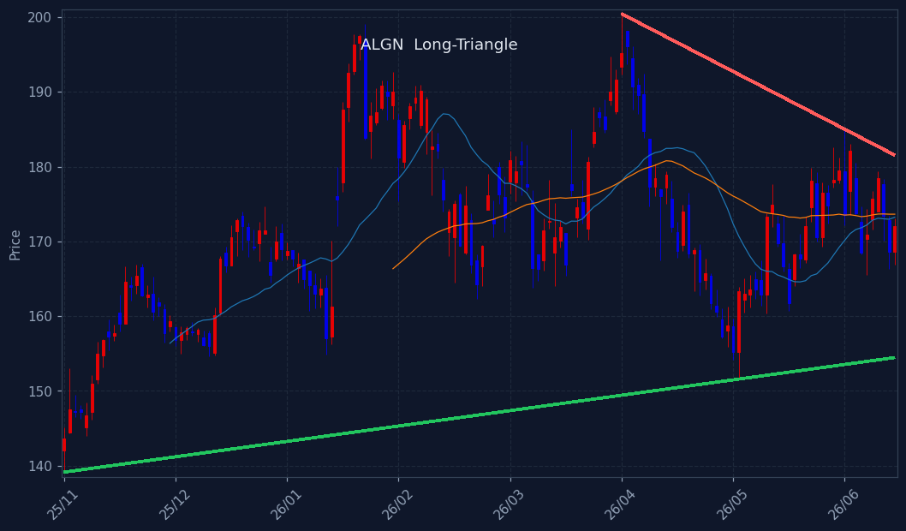
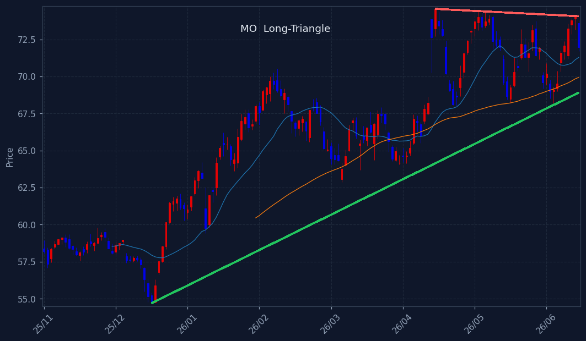
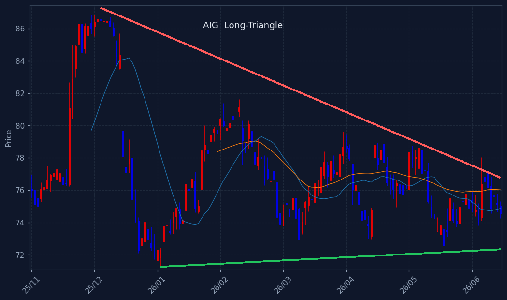
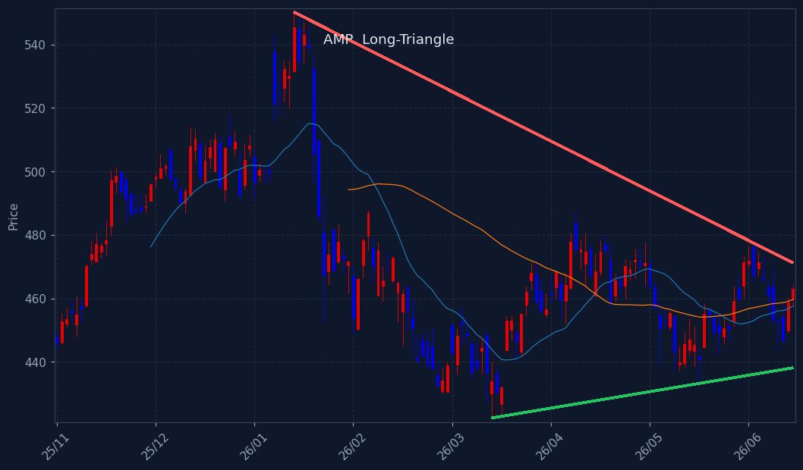
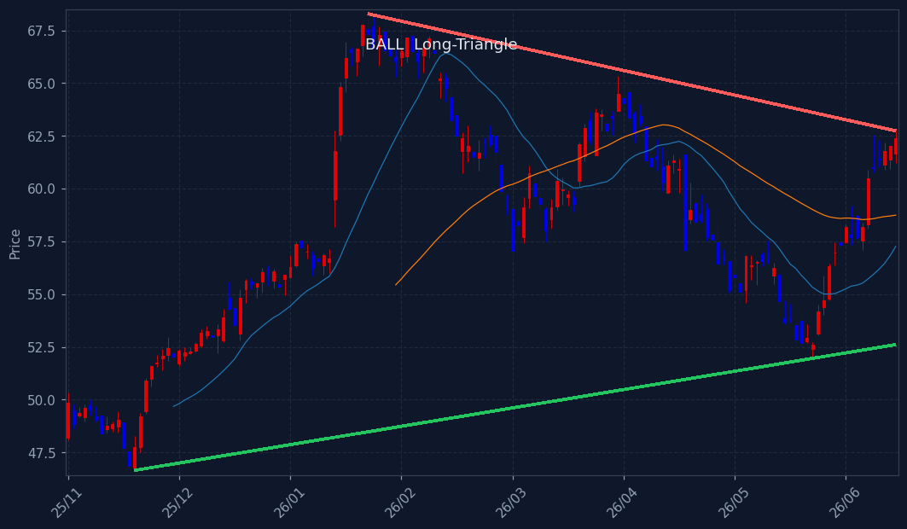
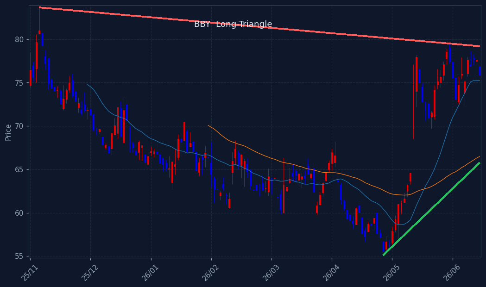
※ 삼각수렴 돌파 임박 종목. 📐장기 삼각수렴(수개월 대형 삼각형, 볼록껍질 추세선+실수축) = 백테스트 491건 승률 66%·평균 +8.7%/20일로 엣지 확인(HOOD·TSLA류 대박 초입). 단기 코일 = 엣지 약함(승률 ~60% 베타 수준). 🔻대칭=고점↓·저점↑ / 🟰바닥지지=저점 평평. 매수추천 아님·종합점수/Top3 미반영(관찰용).